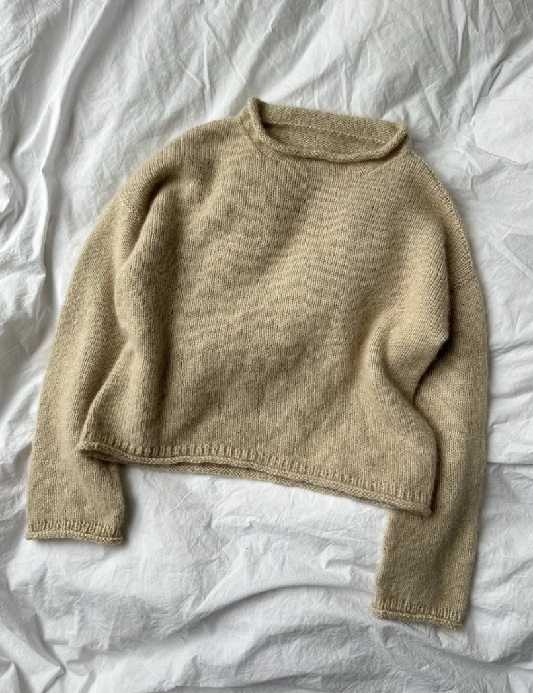
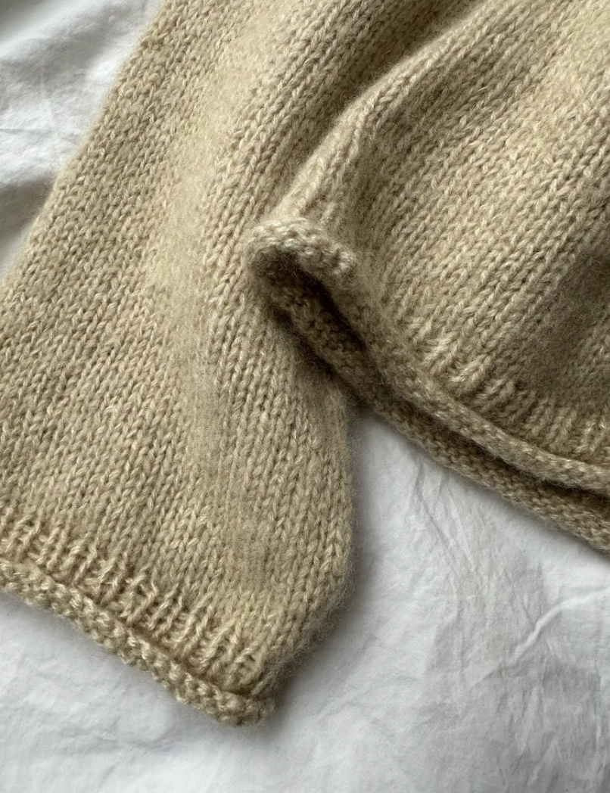
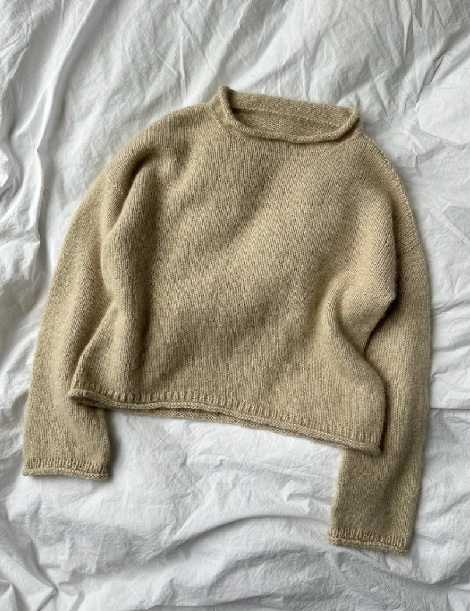
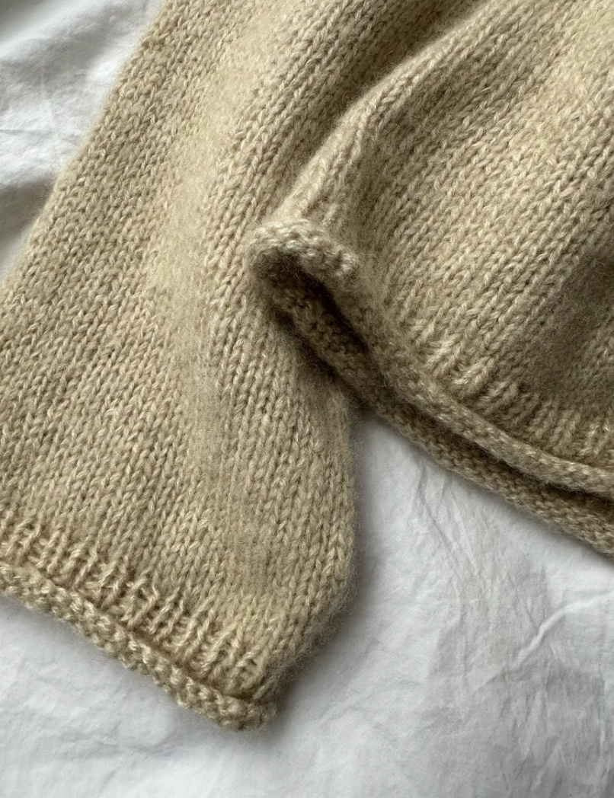

shopping_bag
menu
Cloud Sweater
 



Petite Knit
The Cloud Blouse is worked from the top down. First the back yoke is worked flat back and forth while short rows hare worked to shape the shoulders. Then, each shoulder is worked separately, back and forth and with short rows. The shoulders are then joined to form the front yoke. The front and back yoke are joined at the underarms to form the body, which is worked in the round on a circular needle. The sleeves are worked from stitches that are picked up and knitted along the armhole openings. The sleeves are worked in the round. At the end, the stockinette stitch funnel neckline is worked from stitches that are picked up and knitted along the neck opening.
Knit a swatch before beginning the project to check if the recommended needle size gives you the correct gauge.
Size guide
The Cloud Blouse is designed to have approx. 12-15 cm [4¾-6 inches] of positive ease. The sizes XXS (XS) S (M) L (XL) 2XL (3XL) 4XL (5XL) are designed to fit a bust circumference of 75-80 (80-85) 85-90 (90-95) 95-100 (100-110) 110-120 (120-130) 130-140 (140-150) cm [29½-31½ (31½-33½) 33½-35½ (35½-37½) 37½-39½ (39½-43¼) 43¼-47¼ (47¼-51¼) 51¼-55 (55-59) inches]. The measurements for the finished blouse are listed on the front page of the pattern. Measure yourself before starting your project, to determine which size will fit you the best. For example, if you measure 90 cm [35½ inches] around your bust (or around the widest part of your upper body) you should knit a size S. A size S blouse has a bust circumference of 102 cm [40¼ inches] which in the given example would give you 12 cm [4¾ inches] of positive ease.
Sizes: XXS (XS) S (M) L (XL) 2XL (3XL) 4XL (5XL)
Bust circumference: 92 (96) 102 (106) 112 (122) 130 (140) 150 (160) cm [36¼ (37¾) 40¼ (41¾) 44 (48) 51¼ (55) 59 (63) inches]
Length: 51 (52) 54 (56) 58 (60) 62 (64) 66 (68) cm [20 (20½) 21¼ (22) 22¾ (23½) 24½ (25¼) 26 (26¾) inches] (measured mid back excl. collar)
Gauge: 20 sts x 31 rows in stockinette stitch on a 4 mm [US6] = 10 x 10 cm
Needles: Circular needles: 4 mm [US6] / 40, 60 and 80 or 100 cm [16, 24 and 32 or 40 inches]; Double-pointed needles: 4 mm [US6]
Material: 175 (200) 200-225 (225) 225 (250) 275 (275) 300 (300) g Silk Mohair by Isager Yarn (25 g = 212 m [232 yds]) or Tynn Silk Mohair by Sandnes Garn (25 g = 212 m [232 yds]) or Silk Mohair by Sysleriget (50 g = 420 m [460 yds]) or 175 (200) 200 (200) 225 (225) 250 (250) 275 (275-300) g Soft Silk Mohair by Knitting for Olive (25 g = 225 m [246 yds]) or 300 (325) 325 (350) 350 (375) 400 (425) 450 (475) g Brushlight by Cardiff (25 g = 138 m [151 yds]). Note: Two strands of yarn are held together throughout. The given yardage amounts are the total yardage needed
Difficulty: ★ ★ ★ (3 out of 5)
See the classification of difficulty here. This pattern is digital and will be sent as a pdf-file to your e-mail. The green Cloud Blouse is knitted in Silk Mohair by Isager in color 57. The white Cloud Blouse is knitted in Brushlight by Cardiff in the color Silver [102].